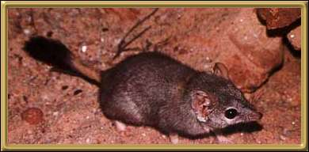

This little animal is well adapted to the central desert areas of Australia, and doesn't need to drink. It is a nocturnal creature, sleeping in a burrow, and ocassionally emerging during the day to bask in the sun.
Photographer: unknown